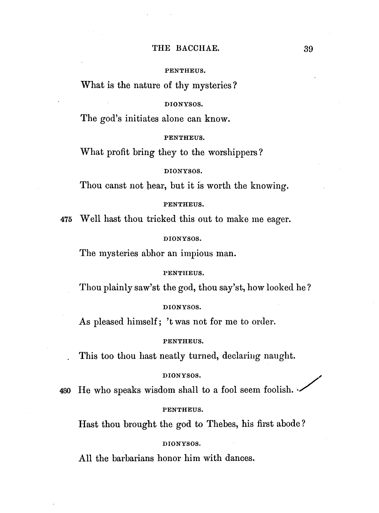
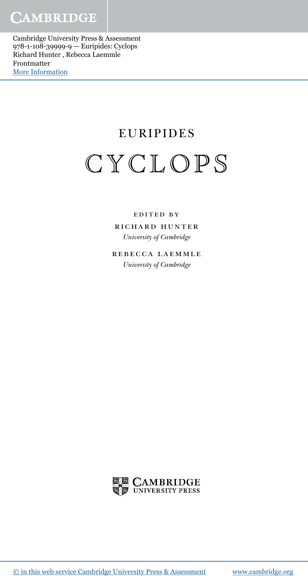
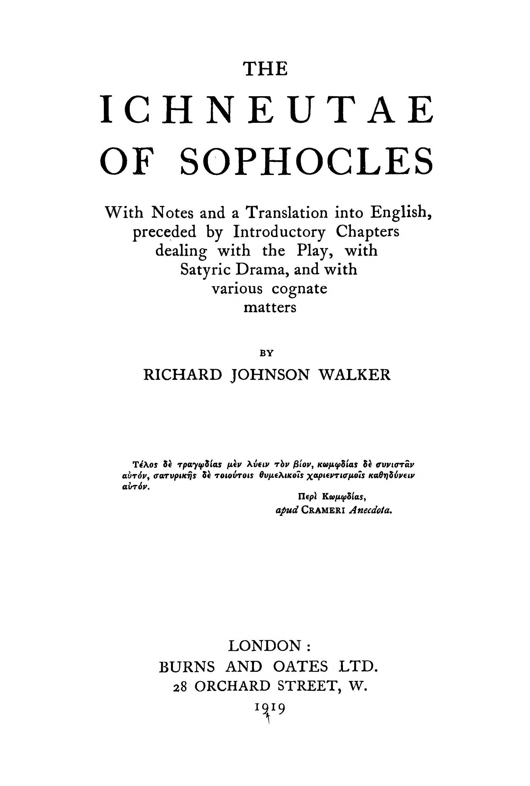
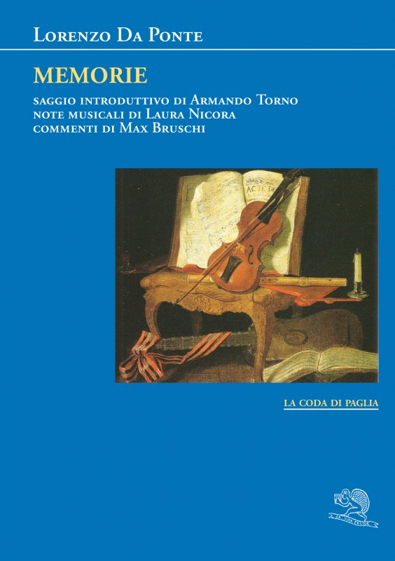
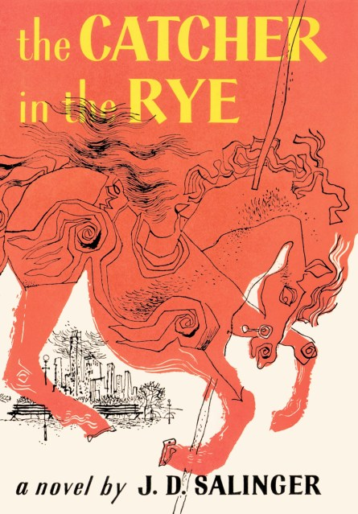

1:15:46 · 14 OPERE
Il "troll online" quale vicolo cieco del discorso razionale.
Il filo del discorso
L’intervento prende avvio da una domanda pratica: quando un confronto nei commenti smette di essere una discussione e diventa un esercizio sterile? Dr Divago rilegge uno scambio nato sotto un filmato del Mattino su una protesta contro il Green Pass a Napoli. Il suo intento dichiarato è riconoscere gli spostamenti dall’argomento alla persona, il ricorso al prestigio e le formule che chiudono il discorso.
Leggi la sintesi completaRiduci la sintesi
L’arte di ottenere ragione di Schopenhauer offre il riferimento principale: gli stratagemmi vengono applicati a una controversia concreta, senza che la scheda riproduca nomi o profili dei commentatori. La cornice letteraria iniziale oppone la parola sensata all’incapacità di comprenderla. Occorre distinguere i testi: il relatore nomina il Ciclope di Euripide e gli Ichneutai di Sofocle, ma la massima riconoscibile appartiene alle Baccanti, verso 480. Il Ciclope è conservato integralmente; il dramma di Sofocle è frammentario. Anche la spiegazione di Kunstgriff va trattata con precisione: il termine può indicare un espediente o uno stratagemma, mentre la resa come attacco artificiale è una lettura del relatore, non il suo significato lessicale esclusivo. Una citazione attribuita a Heinlein introduce poi la critica del pubblico che affida agli intrattenitori un’autorità intellettuale; il libro di provenienza resta incerto. Nello scambio online Dr Divago riconosce attacchi alla propria formazione umanistica e richieste di affidarsi agli specialisti. Risponde distinguendo il possesso di titoli dalla capacità di spiegare un passaggio e di sostenerlo con prove. I richiami a Comma 22, ai falsi profeti riconoscibili dai frutti e all’Etica di Spinoza sviluppano questa distinzione fra etichetta e ragionamento. La critica dell’autorità, tuttavia, non rende irrilevanti le competenze pertinenti: nemmeno il prestigio di uno studioso dissenziente può sostituire l’esame dei dati. In particolare, il contributo di Robert Malone alla ricerca sulla trasfezione dell’RNA non ne fa l’unico inventore di ogni tecnologia successiva né un arbitro definitivo dei suoi impieghi clinici. L’analisi mette in luce anche una tensione interna. Dr Divago dichiara di voler rispondere con fermezza senza insultare, ma usa a sua volta espressioni denigratorie e attribuisce problemi psicologici all’interlocutore. Sono giudizi polemici, non diagnosi. L’analogia fra parole condivise e conoscenza colpevole non dimostra da quale fonte una persona abbia ricavato le proprie informazioni. Allo stesso modo, l’esistenza di complotti storici non costituisce una prova automatica di una specifica cospirazione presente. Il ricorso a ironia, esempi estremi e personaggi cinematografici può mostrare un problema argomentativo, ma non certifica da solo l’errore di chi risponde. La parte più ampia riguarda il linguaggio della pandemia e lo sviluppo dei vaccini. Il relatore contesta l’impiego di termini tecnici senza spiegazioni e mette in dubbio la rapidità delle autorizzazioni. Qui il testo del video richiede alcune distinzioni sostanziali. Un vaccino può essere anche un medicinale: non si tratta di classi incompatibili, e i vaccini non sono definiti esclusivamente dall’impiego di virus inattivati. La ricerca preesistente, lo svolgimento parallelo di attività e l’esame progressivo dei dati hanno contribuito ad abbreviare i tempi. La rolling review dell’EMA e il Fast Track della FDA appartengono a sistemi regolatori distinti; una procedura accelerata non equivale, di per sé, all’eliminazione delle prove di qualità, sicurezza ed efficacia. Le date europee ricordate nello scambio, 21 dicembre 2020 per Comirnaty e 6 gennaio 2021 per Moderna, riguardano autorizzazioni condizionate, non l’assenza di valutazione. Il rapporto IFPMA del 2019, citato per il percorso di 10–15 anni, descrive tempi tipici e discute anche come ridurli: quella durata non è un minimo normativo che renda automaticamente fraudolento ogni sviluppo più rapido. Nel passaggio sui grafici delle miocarditi è necessario distinguere segnalazioni spontanee, incidenza e nesso causale. L’associazione fra vaccini a mRNA e miocardite/pericardite è stata riconosciuta dalla farmacovigilanza, ma un grafico di conteggi assoluti accostati fra anni diversi non ne misura da solo la frequenza o la causa. Servono popolazioni esposte, dosi, fasce d’età, prodotto e criteri di raccolta confrontabili. Il richiamo a un giornalista brasiliano colto da malore in diretta resta privo di identificazione e documentazione clinica: il filmato non consente di dedurne un’origine vaccinale. Le digressioni su Fauci, Galileo e il lessico illustrano il rischio di trasformare una persona o una formula in un criterio ultimo di verità. Il conferimento Sapienza del gennaio 2022 fu un dottorato honoris causa, non una laurea. La documentazione storica distingue la minaccia di tortura a Galileo dall’affermazione di una tortura fisica effettivamente subita. Sul piano linguistico, no-vax è un prestito attestato in italiano: respingerne l’uso può essere una scelta polemica, non una constatazione che la parola non esista. Anche complottista è attestato per chi interpreta eventi attraverso cospirazioni, mentre Dr Divago ne propone un significato restrittivo legato a chi organizza un complotto. La conclusione ritorna alla differenza fra ascoltare parole e comprenderle. Una frase di Da Ponte è riconoscibile nelle Memorie, pur senza che il titolo venga pronunciato. Il giovane Holden fornisce infine l’immagine di una valutazione ingenua dell’intelligenza altrui: parla il narratore Holden a proposito di Sally, non l’autore in veste di psicologo. Resta aperta la domanda iniziale sull’utilità del confronto. Per il relatore il limite si raggiunge quando si ripetono etichette e richiami all’autorità senza rendere esaminabili i passaggi; la stessa esigenza di controllo deve valere anche per le sue risposte e per le generalizzazioni storiche, linguistiche e sanitarie che le accompagnano.
I libri nel discorso

Baccanti (Bacchae)
Identificazione probabile
Note sul riferimento
Copertina: The Bacchae of Euripides, testo e traduzione inglese di Alexander Kerr, Ginn & Company 1899, p.39 / v.480
Pagina interna autentica 39 della traduzione inglese, PDF p.43: dialogo Penteo/Dioniso e verso 480 leggibili. Il PDF digitalizza il replacement volume UC Berkeley del 1991 dell’edizione 1899, come dichiara la nota di conservazione. Non copertina o frontespizio, non esemplare mostrato nel video.
Riferimento ricavato dalla trascrizione automatica.

Ciclope (Cyclops)
Note sul riferimento
Copertina: Euripides, Cyclops, Richard Hunter e Rebecca Laemmle, Cambridge University Press 2020, ISBN 9781108399999
Frontespizio della moderna edizione critica inglese, pagina 2 dell’estratto editoriale; l’edizione mostrata nel video non è identificata. Non contiene la massima delle Baccanti v.480.
Riferimento ricavato dalla trascrizione automatica.

Ichneutai (I cercatori di tracce)
Note sul riferimento
Copertina: The Ichneutae of Sophocles, a cura e con traduzione di Richard Johnson Walker, Burns & Oates, Londra 1919
Frontespizio autentico del volume digitalizzato dalla copia Cornell, pagina immagine n10 identificata come Title nello scandata. Non copertina né fotografia del papiro antico; edizione con testo, traduzione e commento, non confermata nel video.
Riferimento ricavato dalla trascrizione automatica.

L’arte di ottenere ragione. Esposta in 38 stratagemmi
Note sul riferimento
Copertina: Adelphi, Piccola Biblioteca 274, 1991, 124 pagine, ISBN 9788845908569. Traduzione di Nicola Curcio e Franco Volpi, cura di Franco Volpi. Trattato postumo noto come Eristische Dialektik.
Copertina integrale autentica Adelphi arancione: autore, titolo, sottotitolo, numero 274 e marchio. Sostituita la versione di condivisione sociale con il file specifico della copertina individuato nella pagina dell’editore. Il collegamento all’opera resta probabile; il titolo non è pronunciato.
Riferimento ricavato dalla trascrizione automatica.

Comma 22 / Catch-22
Note sul riferimento
Copertina: Simon & Schuster · 50th Anniversary Edition · 2011 · ISBN 9781451621174
Copertina inglese dell’edizione del cinquantenario, dal catalogo Simon & Schuster, con introduzione di Christopher Buckley. Buckley non è coautore del romanzo. L’edizione del 2011 è proposta come riferimento bibliografico; la copia utilizzata dal relatore e una traduzione italiana pubblicata non sono identificate.
Riferimento ricavato dalla trascrizione automatica.

Vangelo secondo Matteo
Identificazione probabile
Note sul riferimento
Copertina del volume completo: San Paolo, 2014 · Nuova Versione dai Testi Antichi · edizione di riferimento
Vangelo secondo Matteo è un libro della Bibbia. L’immagine mostra il volume completo San Paolo di riferimento, non un’edizione autonoma del singolo libro e non una versione identificata nella citazione.
Riferimento ricavato dalla trascrizione automatica.

Amici miei
Identificazione probabile
Note sul riferimento
Locandina di Amici miei, film 1975 · repertorio Cinematografo: Locandina di Amici miei, film 1975 · repertorio Cinematografo
Locandina completa del primo film 1975, a risoluzione limitata; non Amici miei–Atto II°, usata come voce distinta. La scena del genio è richiamata come analogia comica.
Riferimento ricavato dalla trascrizione automatica.

The Great Barrington Declaration
Note sul riferimento
Dichiarazione firmata: FACSIMILE DEL DOCUMENTO di una pagina, datato e firmato il 4 ottobre 2020 a Great Barrington. Testo inglese e tre firme visibili; PDF attualmente ospitato da AIER, con metadati del file del settembre 2021, distinti dalla data della dichiarazione. La strategia proposta è denominata Focused Protection. Non è una copertina libraria né il libro collettaneo pubblicato successivamente.
Pagina integrale del documento con testo e firme. La data del testo è 2020; il file corrente presenta metadati 2021. Non è la copertina del libro successivo.
Riferimento ricavato dalla trascrizione automatica.

Etica
Note sul riferimento
Copertina: Laterza · Biblioteca Filosofica · 2009 · traduzione di Sergio Landucci
Immagine autentica dell’opera, controllata visivamente; l’edizione di riferimento non è attribuita al filmato.
Riferimento ricavato dalla trascrizione automatica.

The Rape of the Mind
Identificazione probabile
Note sul riferimento
Copertina: World Publishing Company · 1956 · testo inglese
Fotografia della copertina dell’edizione originale del 1956, fornita dal catalogo OpenLibrary. I segni d’usura appartengono all’esemplare fotografato. Edizione del video non accertata.
Riferimento ricavato dalla trascrizione automatica.
The Complex Journey of a Vaccine – Part III: The Steps Behind Developing a New Vaccine
Identificazione probabile
Note sul riferimento
Copertina: IFPMA, The Complex Journey of a Vaccine, Part III, rapporto 2019, versione digitale ufficiale oggi collegata
Copertina autentica della prima pagina del rapporto ufficiale di 16 pagine: Part III e sottotitolo leggibili. Non confondere con Part II del 2014 sul processo produttivo. Il percorso di caricamento 2023 e Stage 5 non prova che il video usasse questa esatta revisione.
Riferimento ricavato dalla trascrizione automatica.

Memorie
Identificazione probabile
Note sul riferimento
Copertina: Lorenzo Da Ponte, Memorie, La Vita Felice 2017, ISBN 9788893461405
Copertina autentica dell’edizione moderna La Vita Felice: autore, titolo e natura autobiografica riconoscibili. Non prima edizione ottocentesca né edizione identificata nel video; il riscontro della frase viene da una riproduzione della precedente edizione Laterza 1918.
Riferimento ricavato dalla trascrizione automatica.

Mentire con le statistiche
Note sul riferimento
Copertina: Monti & Ambrosini · Diogene · 2007 · curatori Giancarlo Livraghi e Riccardo Puglisi
Immagine autentica dell’opera, controllata visivamente; non identifica l’edizione usata nel video.
Riferimento ricavato dalla trascrizione automatica.

The Catcher in the Rye (Il giovane Holden)
Note sul riferimento
Copertina: Little, Brown and Company, edizione hardcover ISBN 9780316769532, immagine editoriale corrente
Copertina autentica del romanzo fornita da Hachette/Little, Brown: cavallo da giostra rosso e titolo giallo. L’opera è del 1951; non si assume che questa immagine corrente identifichi una prima tiratura del 1951 o l’esemplare del relatore.
Riferimento ricavato dalla trascrizione automatica.